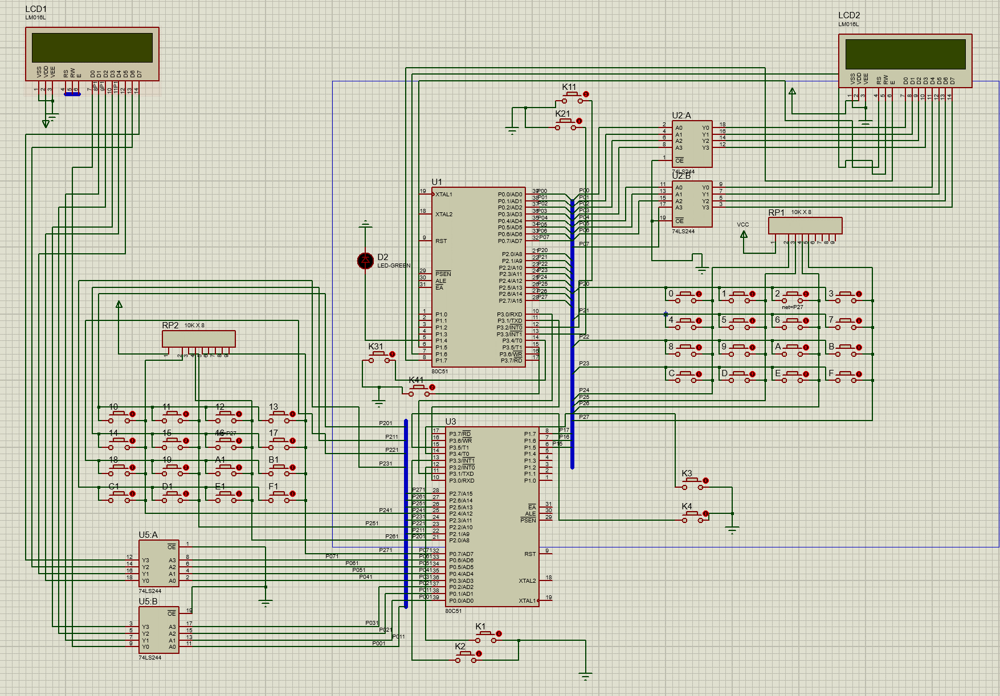
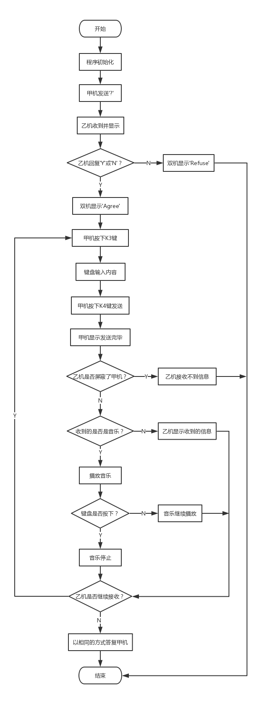

概要
本次电子设计先自主完成单片机上所有芯片的焊接，经调试确认焊接、硬件等正常工作后，再在单片机的基础上完成双机通信系统的设计。
双机通信是单片机的一个重要应用，MCS-51系列单片机上有一个通用异步接收／发送器UART，通过引脚RXD[P3．O]和TXD[P3．1]可与另一单片机进行全双工的串行异步通信，发送数据时由TXD端送出，接收时数据由RXD端输入。
本次课程设计就是要利用单片机来完成一个通信系统，实现两个单片机之间的有序通信。本文详细介绍了关于基于单片机89C52实现双机之间的全双工通信系统设计，软件部分采用C51语言编程实现接收部分和发送部分的功能及其它扩展功能。在Protues上进行仿真，程序软件设计完成后，将程序烧入单片机。在通信过程中，使用通信协议进行通信，通信的结果使用LCD1602液晶显示屏进行显示。
焊接工艺总结
焊接准备
烙铁头表面覆盖光亮的焊锡，对于保证烙铁头很好地传导热量和焊接点的清洁至关重要。焊接前的准备工作主要是对被氧化的烙铁头进行预处理。如果加热前烙铁头表面沾锡均匀，可不用进行预处理。
在烙铁架的小盒内准备好清洁海绵并用水浸湿，准备好助焊用的松香。待电烙铁接通电源片刻后，在烙铁头的温度大约达到松香的熔解温度时，将烙铁头插入松香，让其表面涂覆一层松香，再等片刻，待烙铁头温度达到焊锡的熔解温度时，在烙铁头部表面均匀熔化并覆盖一层光亮的锡层。
如果烙铁头氧化严重，上述步骤无法使烙铁头均匀沾锡，则需要将烙铁头的氧化部位在含有焊锡和松香的铜丝编带上反复磨蹭，直到表面的黑色氧化物完全去除。
在焊接过程中，如发现烙铁头沾上焦化的助焊剂或其它黑色残留物时，应随时在清洁海绵上擦拭，除去烙铁头部的残留物。如有必要，可将烙铁头放在清洁海绵上数秒钟，降低其温度后再迅速插入松香，这样可以将烙铁头的氧化锡还原，以保持光亮的覆盖层。
焊接步骤
（1）准备施焊：首先把被焊件、锡丝和烙铁准备好处于随时可焊的状态。即右手拿烙铁烙铁头应保持干净并吃上锡，左手拿锡丝处于随时可施焊状态。
（2）加热焊件：把烙铁头放在接线端子和引线上进行加热。应注意加热整个焊件全体，例如图中导线和接线都要均匀受热。
（3）送入焊丝：被焊件经加热达到一定温度后立即将手中的锡丝触到被焊件上使之熔化适量的焊料。注意焊锡应加到被焊件上与烙铁头对称的一侧而不是直接加到烙铁头上。
（4）移开焊丝：当锡丝熔化一定量后焊料不能太多迅速移开锡丝。
（5）移开烙铁：当焊料的扩散范围达到要求，即焊锡浸润焊盘或焊件的施焊部位后移开电烙铁。撤离烙铁的方向和速度的快慢与焊接质量密切有关，操作时应特别留心仔细体会。
焊丝的供应
（1）供应时刻：原则上是被焊件升温到达焊料的熔化温度是当即送上焊锡丝。
（2）供应方位：应是在烙铁与被焊件之间并尽量接近焊盘。
（3）供应数量：应看被焊件与焊盘的巨细，焊锡盖住焊盘后焊锡高于焊盘直径的1/3既可。
焊接注意事项
（1） 焊接时间不宜过久，但要完全熔著，以免造成冷焊。
（2） 焊点的表面要平滑、有光泽。
（3） 焊电完全冷却前，不可移动。
（4） 电烙铁不用时要放置于电烙铁架上，并随时保持电烙铁的清洁。
（5） 焊接完毕，要在烙铁头镀上薄层焊锡，避免氧化，并等冷却后再收存。
编程思想
硬件电路设计
通信过程中双方既是发送方也是接收方，发送方的数据由串行口TXD端输出，经过传输线将信号传送到接收方RXD接收端，接收方也通过传输线将信号送达发送方串行口的接收端。接受方接收后，通过数据口P0及控制口P1的P1.5、P1.6、P1.7在LCD1602上显示接收的信息。相关选择控制按键如输入内容键K1(P3.2)、发送键K2(P3.3)、同意键K3（P3.4）、拒绝键K4（P3.5）、键盘P2等，整体电路设计如图1所示。
软件设计
通过通信协议进行发送接收，甲机先发送‘?’给乙机，当乙机接收到‘?’后，会在LCD屏上显示选择同意或拒绝，如同意和甲机建立通信，则通过按键K3向甲机回答‘Y’，同时甲乙机LCD屏上显示‘Agree’。如拒绝和甲机通信，则通过按键K4向甲机回答‘N’，同时甲乙机LCD屏上显示‘Refuse’，甲机可再次请求建立连接。甲机收到乙机的答复后做出下一步操作。
当甲机和乙机建立通信后，一方可先按下K3键输入内容，每次发送内容最多可达32个字符，通过单片机上的键盘输入，输入完毕后，按下K4键点击发送，在屏幕下方会提示‘Send Finish’， 另一方收到的内容会在LCD上显示，此时可继续接收或发送信息，为了不影响下次接收的内容显示，可选择按键K3清空LCD屏幕，不清空则接着上次接收内容继续显示。甲乙两机可实现自由的全双工通信，即聊天模式。
其中键盘是行列式键盘，它是用P2口的4条I/O线作为行线，4条I/O线作为列线组成的键盘。在行线和列线的每一个交叉点上，设置一个按键，这样键盘中按键的个数是16个。通过每次键盘列扫描、按键判断、键值计算三个步骤检测是否有按键按下并返回按下的按键值。
除了基本的发送和接收功能，该通信系统建立后还可拒收对方信息，即把对方拉黑功能，按下K4键选择拒绝或恢复通信。发送图片音乐也是通信的一大特点，一方向另一方发送播放音乐《我和我的祖国》，播放音乐过程中不干扰正常的通信，可通过键盘中任意键结束音乐播放。

程序框图

核心代码
发送输入
1 | while(send_count<32) { |
接收内容
1 | if(rec=='?') { //接收方 |
体会与建议
1.对电子设计有了更直接的认识，对51单片机也有了更全面的认识，虽然曾经也焊过电路板，无论从原理还是实际操作上来讲那都没法和这次相比。对焊接技术有了更进一步的熟悉，对焊接程序也有了更清晰的认识，也更熟悉了焊接的方法技巧，看着我的焊点从最初的惨不忍睹到最后的爱不释手真的很有成就感。
2.对问题的分析处理能力有了很大的进步，由于一开始的盲目行动，我犯了很多低级的错误，比如一开始居然把元件焊在了印制板的反面，先焊了集成块等等。随着设计的进行，我深刻体会到了事前分析规划的重要性，相信这是没有进行过这种实践的人所体会不到的。
3.通过这次紧张的电子设计课程，我收获颇多，每天面对着电脑，翻阅各种相关资料，体会颇深。短暂的单片机学习，有种意犹未尽之感，在这次课设中，加深了单片机相关知识的理解，之前的模棱两可已经不存在，这种感觉很好。
4.在设计开始的前期，也遇到了麻烦，比如说，由于发送端和接收端的通信协议没有做好，导致数据不能正确的传输，在解决问题的过程中，对于通信协议的协议有了深刻的认知。以及我们的单片机RS-232C接口可能存在一些硬件问题，每次发送和接收都存在很强的信号干扰，最后我们放弃使用RS-232C接口，改用TXD和RXD相接的方法才使得通信成功。
5.RS-232是目前最常用的一种串行通讯接口。由于RS-232-C接口标准出现较早，难免有不足之处。接口的信号电平值较高，易损坏接口电路的芯片；传输速率较低，在异步传输时，波特率为20Kbps；接口使用一根信号线和另一根信号返回线而构成共地的传输形式，这种共地传输容易产生共模干扰，所以抗噪声干扰性弱；传输距离有限，最大传输距离标准值为50英尺。因此建议使用RS-485标准实现，RS-485接口具有良好的抗噪声干扰性，长的传输距离和多站能力等优点就使其成为首选的串行接口。
6.很感谢徐老师的耐心教导，他的幽默让我们觉得亲切，他的认真负责让我们折服。在繁忙的一个学期即将结束之时，我的思想成熟了，这次的电子设计让我找到了方向，让我懂得了很多，有知识方面的，还有人格方面的。我相信，只要不放弃，只要努力，就一定可以！
源代码
1 |
|